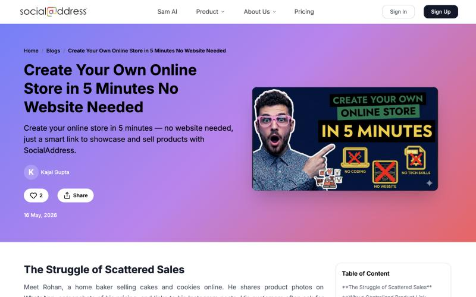

01Find where users get stuck
- Checked event tracking in Google Analytics so key actions were recorded correctly.
- Studied traffic patterns: where users came from and where they went next.
- Found drop-off points in key flows such as sign-up and store creation.
- Looked at which features users engaged with, and which they never found.
- Spoke with users to understand where the product felt confusing.
02Guide them inside the product
Using those findings, we introduced product tours, tooltips and onboarding improvements, and made underused features more visible so users could discover more of the platform.
03Reach them outside the product
I wrote 11 blogs, published on the SocialAddress site under my name. Each one starts from a small-business problem I heard in research, then shows how the product solves it.

| Blog | Problem it addresses |
|---|---|
| Create Your Own Online Store in 5 Minutes ↗ | Products scattered across chats and screenshots |
| Why "I'll Pay You Later" Quietly Kills Small Businesses ↗ | Chasing payments by hand |
| From "Yes" to "Booked" in Seconds ↗ | Back-and-forth to fix a time |
| How to Host a Workshop That People Actually Love ↗ | Manual workshop enrolment |
04What I'd do next
Measure each change against the drop-off it targeted. For example, store-creation completion before and after the tooltips would show which changes actually helped.